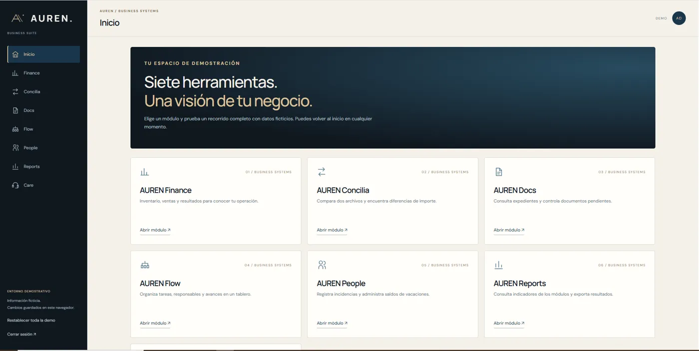

Soluciones a tu medida.
Explora ejemplos de sistemas y módulos para finanzas, operaciones, personas y más. Una muestra de lo que podemos construir para tu negocio.
Explorar Business SuiteAUREN / SYSTEMS & AUTOMATION
Diseñamos soluciones digitales que simplifican operaciones, organizan información y eliminan tareas repetitivas. Desde una herramienta puntual hasta un sistema a medida.
Explorar solucionesLO QUE CONSTRUIMOS

Explora ejemplos de sistemas y módulos para finanzas, operaciones, personas y más. Una muestra de lo que podemos construir para tu negocio.
Explorar Business Suite
Solo la herramienta correcta. Aplicaciones ligeras para extraer datos, conciliar archivos, generar reportes y resolver tareas específicas.
Explorar AUREN UtilitiesNUESTRO ENFOQUE
Identificamos qué consume tiempo y qué resultado necesitas.
Elegimos entre una utilidad puntual o un desarrollo personalizado.
Priorizamos facilidad de uso, validación y reportes claros.